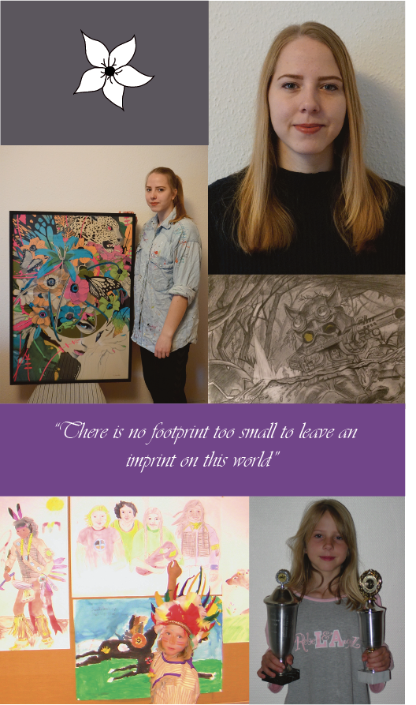
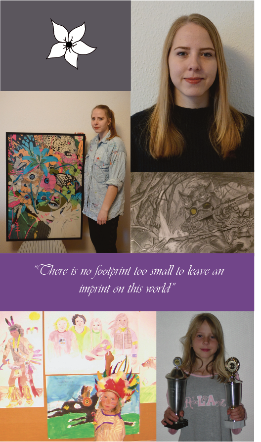

Hej, mit navn er Agnete Laursen.
Jeg er en pige på 21 år, som studerer multimediedesign på Erhvervsakademiet Lillebælt. Jeg begyndte uddannelsen i September 2017, og er næsten færdig med 1. Semester. Jeg kommer fra en by ved navn Gedved, som er ca. 10 km nord for Horsens, Midtjylland. Der boede jeg indtil jeg fyldte 19 år. Da jeg skulle studere flyttede jeg til Odense med min kæreste.
Mine kompetencer
- Kreativ
- Udfordrende
- Hårdtarbejdende
- Tør fortælle min mening
- Viden indenfor psykologi
- Stærk i sprog og formidling
- Nytænkende
Mine værdier
- Levere et godt arbejde
- Gøre alt så perfekt som muligt
- Overholde det aftalte
- Repktere andre; deres værdier og holdninger
Mine interesser indenfor multimediedesign
Der er en grund til, at jeg læser multimediedesign. Jeg har en stor interesse indenfor det grafiske design, såvel som design af medier og på medierne. Indtil videre er der flere forskellige ting jeg interesserer mig ekstra meget for inden for multimediedesign. Jeg har en passion for at skulle:
- Designe videospilskarakterer eller animationskarakterer
- Udarbejde apps
- Designe Musikcovers
- Designe/skabe sociale medier
- Designe grafiske billeder, som evt kan trykkes til plakater
- Viden indenfor psykologi
- Stærk i sprog og formidling
- Nytænkende
Min vej til det kreative
Jeg har altid været en meget kreativ person. Som barn opfandt jeg altid ting, designede tøj, syede bamser og puder og tegnede ting, dog mest heste som var min store passion. I 2015, under mit første sabbatår, begyndte jeg også at male. Jeg fandt en lille malegruppe i Gedved, hvor man hver tirsdag kunne sidde og male sammen. Dog var jeg der ikke mange gange før jeg flyttede til Odense. Her fortsatte jeg med at male billeder når tiden var til det. Jeg blev stor fan af musikeren DJ Okawari, hvis album covers var af smukke blomsterpiger. Jeg begyndte, at lave hans grafiske billeder om til malerier lavet i akrylmaling (kan ses på billedet til højre). Herefter begyndte jeg, at male flere forskellige ting, og især malede jeg geometriske dyr, som jeg solgte. Jeg startede også med, at fotografere dyr og natur. Da jeg begyndte på multimediedesigner uddannelsen, blev jeg introduceret til Adobe Illustrator. Siden har jeg også lavet mine billeder om til grafisk kunst. Du kan se mit arbejde under 'personligt arbejde'. Mine store interesser i dag er stadig at male, designe og fotografere.
Psykologi
Selvom jeg ikke studerer psykologi, har jeg stadig en stor interesse og viden indenfor faget. Jeg har haft psykologi i 2 år på gymnasiet og har taget forskellige kurser inde for faget. Desuden har jeg brugt, og bruger stadig, meget af min fritid på, at læse psykologibøger og se dokumentarer. Udover at selve faget er meget interessant, så mener jeg også, at viden om mennesket er en meget vigtig viden at have som multimediedesigner. Stort set alt hvad man skaber, lige fra musikcovers og computerspilsfigurer til hjemmesider og logoer, vil blive set og opfattet på en bestemt måde. Her er det vigtigt, at have kendskab til psykologien, og kunne vide hvorfor mennesker ser og opfatter på de måder som de gør.